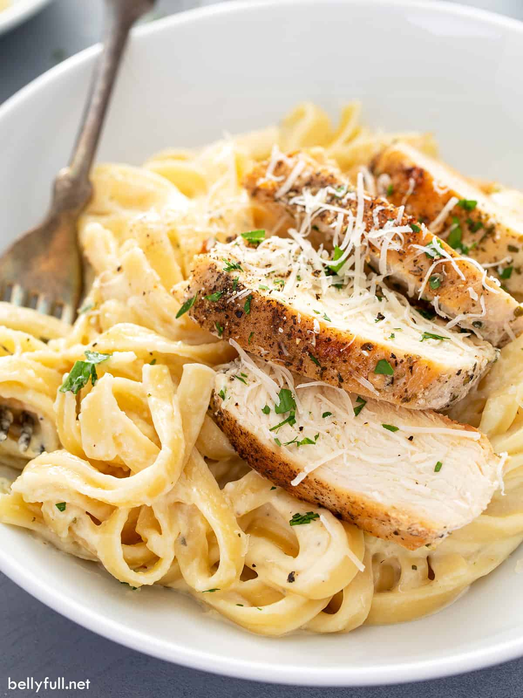

Fettuccine Alfredo

Description
Fettuccine Alfredo, originally from Italy, has been a growing success in the United States, where the dish remains a true classic of Italian restaurants today. This pasta recipe stands out for both its simplicity and its richness, thanks to its creamy butter and Parmesan sauce. In Italy, fettuccine are fresh made pasta and texture and consistency may vary from town to town depending on the recipe. This type of pasta is often served with a ragu, and of course with Alfredo sauce.
Ingredients
- 14 oz Fettuccine
- 1/2 cup unsalted butter (could use MSG butter)
- 1 1/4 cup heavy whipping cream
- 5 cloves garlic, finely minced
- 2 tsp finely chopped thyme
- Salt and pepper to taste
- 2 cups parmigiano reggiano
- Black peppercorn
Instructions
American Fettuccine Alfredo Method:
- Place fettuccine in a pot of boiling water that’s been seasoned generously with salt. Cook according to package instructions or until done.
- In a large pan, add heavy whipping cream and unsalted butter set to medium heat. Constantly stir the pan until all the butter has melted.
- Increase the heat slightly and bring to a gentle simmer. Simmer, stirring occasionally, for 3-4 minutes or until lightly thickened.
- Cut off the heat and add in parmigiano reggiano, chopped thyme, and finely chopped garlic. Vigorously stir together until thoroughly combined. Season to taste with salt and pepper.
- Reserve ¾ cup of pasta water. Drain the pasta.
- Add pasta to the alfredo sauce. Toss and using pasta water as needed to fully emulsify.
- Place in a bowl. Top with grated parmigiano reggiano and a crack of black peppercorn before serving.
Enjoy!